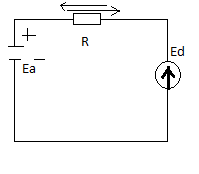
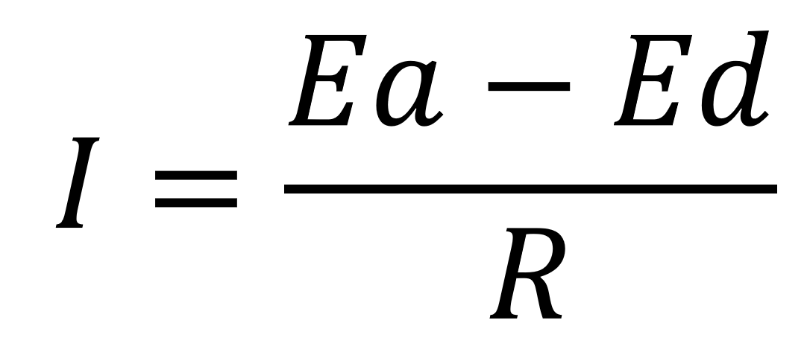
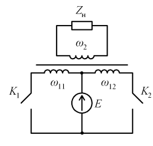
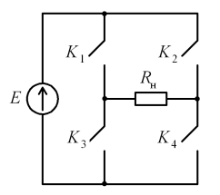

1. Введение Инверторы – устройства, предназначенные для преобразования постоянного
тока в переменный с
регулируемыми напряжением и частотой. Эти устройства применяются в источниках
бесперебойного питания,
при индукционном нагреве, для регулирования скорости
вращения электродвигателей переменного тока. В результате преобразования необходимо
получить
напряжение синусоидальной формы, амплитуду и частоту которого можно регулировать.
Работа инвертора
основана на том, что ток в ветвях периодически
прерывается с помощью вентилей. В качестве вентилей используют тиристоры,
МОП-транзисторы, биполярные
транзисторы с изолированным затвором. Различают зависимые и независимые инверторы.
Зависимые инверторы
(другое название – инверторы,
ведомые сетью) требуют наличия внешних источников переменного напряжения. Такие
инверторы используют в
электроприводах. Независимые (автономные) инверторы не требуют внешних источников.
Переменное
напряжение нужной частоты создается
самим инвертором. Технологии преобразования постоянного тока в переменный получили в
последние годы
значительное развитие. Современные инверторы обеспечивают получение синусоидального
напряжения с малым
коэффициентом гармоник, низкий
уровень электромагнитных помех. Для понимания условий преобразования энергии
роли инвертировании
целесообразно рассмотреть цепь постоянного тока, содержащую два источника тока:
аккумулятор и
генератор-машину
постоянного тока. ЭДС источников направлены встречно и ток в цепи определяется их
разностью.

 При Ea>Ed, то
I (сплошная
стрелка)совпадает по направлению с ЭДС Еа. При этом аккумулятор отдает
мощность (разряжается) ,
а генератор принимает ее и работает
в режиме двигателя. При Ea < Ed, то I (которая налево) изменит свое направление.
При этом генератор
будет отдавать свою мощность аккумулятору, который будет заряжаться. Вывод: отдача или прием мощности определяется совпадением направлений ЭДС и I
в цепи. В общем
случае для изменения мощности нужно изменять либо направление I при неизменном
направлении ЭДС, либо
направление ЭДС при неизменном
направлении тока. Поэтому, в схемах с переменным ЭДС для передачи тока в одном
направлении в
схему нужно ввести вентиль (тиристор) пропускающим ток в одном направлении.
Двухтактный инвертор.
Схема двухтактного инвертора показана на рис. Первичная обмотка трансформатора
разделена на две
секции. Число витков секций 115 одинаково: W11 =W12 . Источник постоянного
напряжения включен между
центральным выводом первичной обмотки трансформатора и
общей точкой ключей K1 и K2 . В качестве ключей используют тиристоры или
МОПтранзисторы.
 Ключи K1 и K2 замыкаются поочередно.
Каждый из ключей
замкнут половину периода T . Предположим для определенности, что в первую половину
периода на
интервале 0 −T 2 замкнут ключ K1 , а K2
разомкнут.
Мостовой инвертор.
Схема мостового инвертора показана на рис. В одну диагональ моста, образованного
ключами K1 −K4 ,
включен источник постоянного напряжения, а в другую – нагрузка. Ключи переключаются
так, что в одну
половину периода замкнута одна диагональная пара ключей,
а во вторую – другая пара ключей. Примем для определенности, что на интервале 0 −T 2
замкнуты ключи K1
и K4 , а на интервале T 2 −T замкнуты ключи K2 и K3 . Если нагрузка имеет
резистивный характер,
напряжение u (t) н будет иметь форму
симметричных прямоугольных импульсов. Регулирование частоты переменного напряжения
обеспечивается
изменением частоты коммутации ключе
